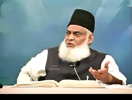

Dr. Israr Ahmed (RH)
A Man who inspired millions by teaching Qur'an

Born
: April 26, 1932, in Hisar, Haryana, British India
Early Education
: Attended local school in Hisar
Migration
: Moved to Pakistan after partition in 1947
Education
: Graduated from King Edward Medical University in Lahore
Initial Career
: Practiced medicine as a doctor
Islamic Studies
: Deep interest in Islamic teachings, joined Jamaat-e-Islami
Marriage
: Married Safia Begum, had several children
Founding Tanzeem-e-Islami
: Left Jamaat-e-Islami and founded Tanzeem-e-Islami in 1975
Television Programs
: Hosted several Islamic programs on television
Publications
: Authored over 60 books on Islam and Quranic teachings
Contributions
: Renowned Islamic scholar, delivered thousands of lectures
Establishment of Institutions
: Founded Qur'an Academy and other educational institutions
Movement
: Launched an Islamic revolutionary movement in Pakistan
Recognition
: Received widespread recognition for his scholarly work
Influence
: Influenced many through his teachings and lectures
Retirement
: Retired from active medical practice to focus on religious work
Family
: Supported by his family in his religious endeavors
Health Issues
: Suffered from heart problems and other health issues
Legacy
: Established various Islamic educational institutions and movements
Passed Away
: April 14, 2010, in Lahore, Pakistan
Funeral
: Attended by thousands, reflecting his impact on society
Posthumous Recognition
: Continues to be revered and studied by many
Links to DR Israr Ahmed Content
Qur'an Academy:
Click
Tanzeem-e-Islami
Click